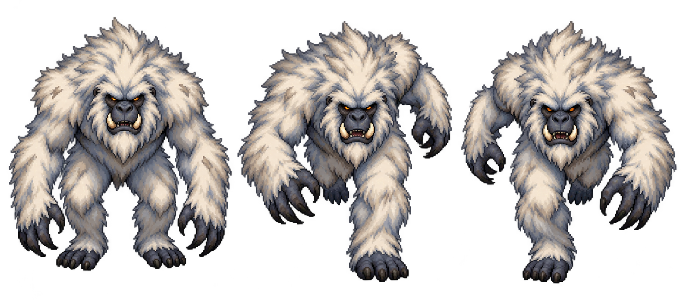
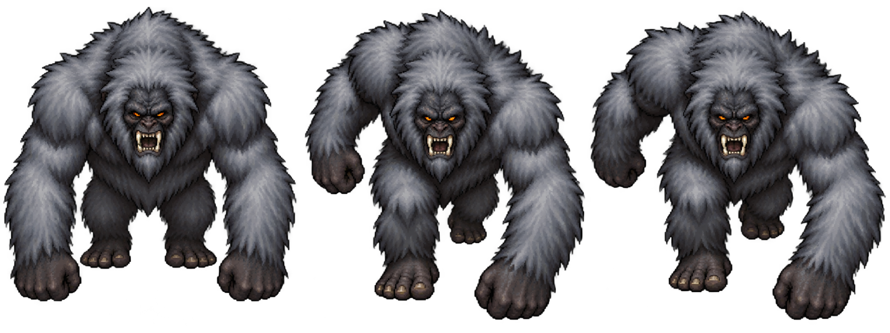
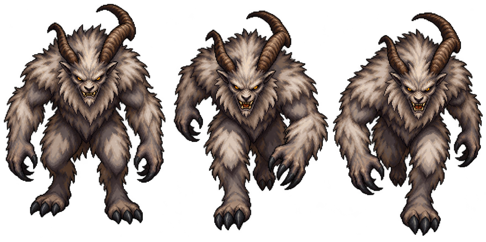
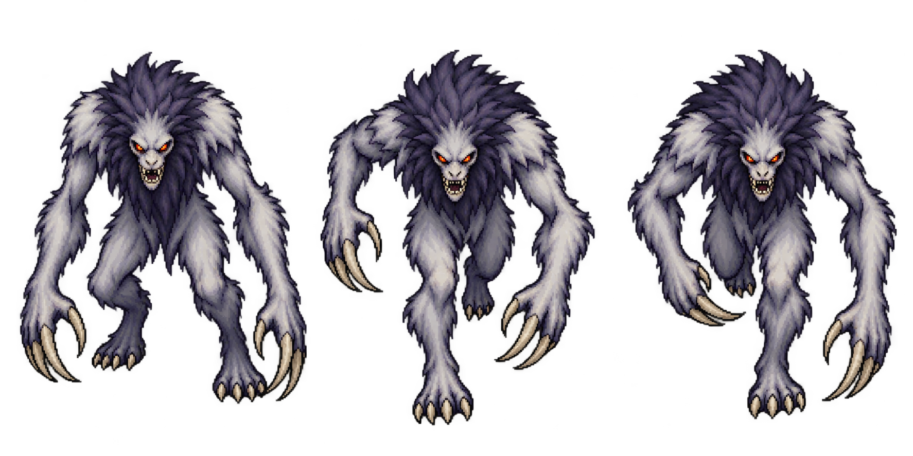
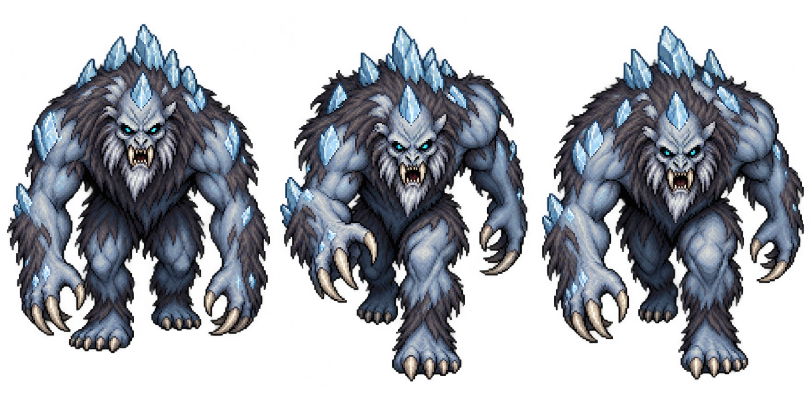

Five pixel-art concepts. Click a creature to see its three poses.
1 White Fang
Wild alpine hunter — ivory mane, dark muzzle and tusks.

Classic feral Yeti
2 Avalanche
Heavy knuckle runner — huge shoulders and low predatory head.

Massive mountain ape
3 Frosthorn
Horned mountain beast — swept horns and a toothy snarl.

Feral alpine demon
4 Night Stalker
Lean pursuit hunter — long arms, dark mane and pale snout.

Gaunt ambush predator
5 Ice Revenant
Frozen ancient creature — ice crown, hollow face and cyan eyes.

Cursed glacier monster